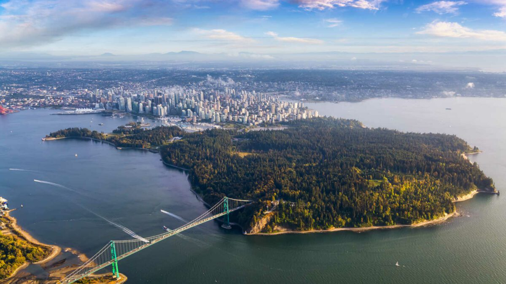
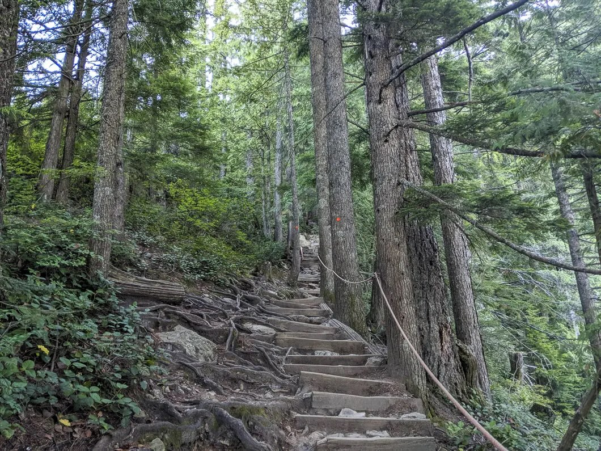
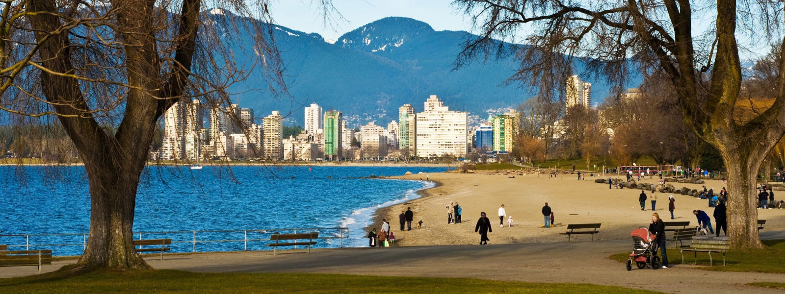

Stroll in Stanley Park
Stanley Park provides beautiful scenary and relaxing walking paths for all strollers.
Looking for cool summer? You've found what you need!

Stanley Park provides beautiful scenary and relaxing walking paths for all strollers.

Grouse Grind rewards hikers with sweeping city views and a lush tree canopy.

Kitsilano offers multiple top-tier athletic facilities along with breathtaking views of the Vancouver skyline.